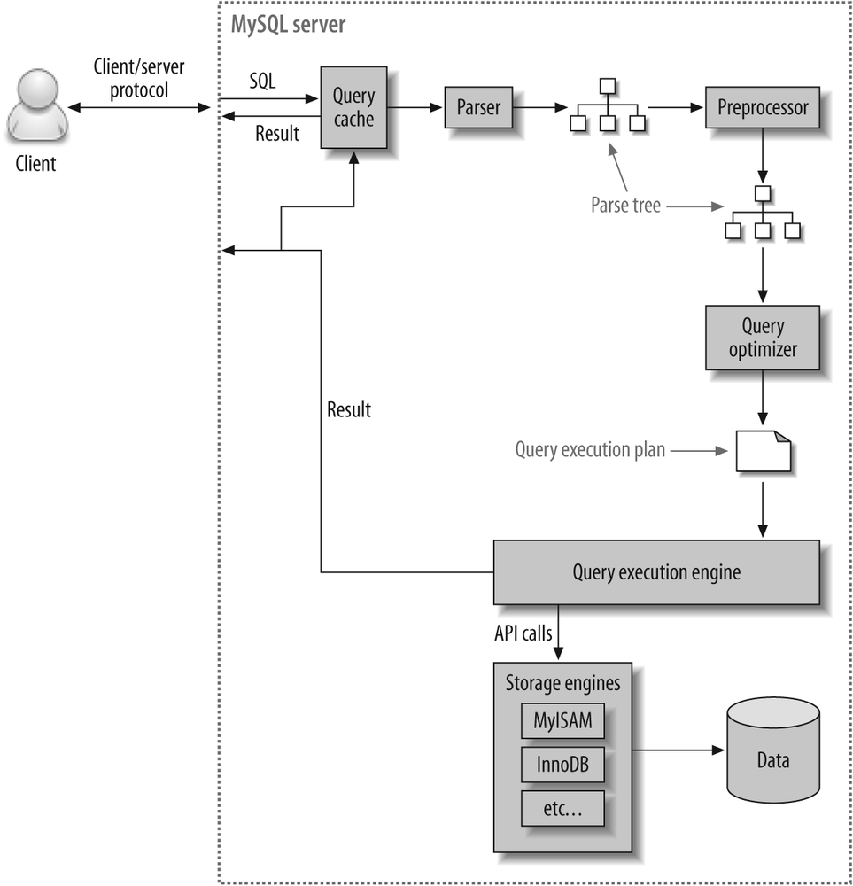

9.1 개요
9.1.1 쿼리 실행 절차

1. SQL 파싱 SQL 문을 잘게 쪼개 MYSQL 서버가 이해할 수 있는 파스 트리 생성
- MYSQL 서버의 SQL 파서가 수행하며 문법 검사 또한 진행
- SQL 파스 트리 생성
2. 파스 트리를 확인하며 읽을 테이블 순서와 인덱스를 선택한다.
- 불필요한 조건 제거, 복잡한 연산의 단순화
- 여러 테이블 조인 시 읽을 테이블 순서 결정
- 각 테이블에 사용될 조건과 인덱스 통계 정보를 활용해 인덱스 결정
- 가져온 레코드들을 임시 테이블에 넣고 다시 한번 가공해야 하는지 결정
옵티마이저에 의해 처리되는 단계로 결과물로 실행계획이 만들어진다.
3. 테이블의 읽기 순서나 선택된 인덱스를 이용해 스토리지 엔진으로부터 데이터를 가져온다.
- 실행 계획대로 스토리지 엔진에 레코드를 읽어오도록 요청한다.
- MYSQL 엔진에서는 읽어온 레코드를 조인하거나 정렬하는 작업을 수행한다.
- MYSQL 엔진, 스토리지 엔진이 동시에 참여
9.1.2 옵티마이저의 종류
- 비용 기반 최적화 방법 (CBO; cost based optimizer) :
쿼리를 처리할 수 있는 여러 실행 계획을 만들고 각 실행 계획의 비용 정보와 대상 테이블의 예측된 통계 정보를 이용해 비용을 산출한다. 이후에 가장 적은 비용의 실행 계획을 실행 한다. - 규칙 기반 최적화 방법 (RBO; rule based optimizer) :
테이블의 레코드 건수나 선택도 등을 고려하지 않고 옵티마이저에 내장된 우선순위에 따라 실행 계획을 수립하는 방식이다.
통계정보를 활용하지 않기 때문에 거의 항상 같은 실행 방법이 만들어진다.
9.2 기본 데이터 처리
9.2.1 풀 테이블 스캔과 풀 인덱스 스캔
- 풀 테이블 스캔 발생 조건
- 레코드 건수가 너무 작아 인덱스를 거치는 작업이 불필요한 경우
- 조건절에 적절한 인덱스가 없는 경우
- 인덱스 레인지 스캔의 경우에도 옵티마이저 판단한 조건 일치 레코드 수가 너무 많은 경우
- InnoDB 스토리지 엔진은 특정 테이블의 연속된 페이지가 읽히면 백그라운드 스레드에 리드어헤드 작업을 수행한다.
- Read ahead : 데이터가 앞으로 필요해질 것을 예측해 요청이 오기 전에 미리 디스크에서 읽어 버퍼풀에 적재하는 작업
- 풀 테이블 스캔과 풀 인덱스 스캔에 모두 활용된다.
9.2.2 병렬 처리
- 하나의 쿼리를 여러 스레드가 작업을 나누어 동시에 처리하는 것
- 조건절 없이 단순히 테이블 전체 건수를 가져오는 쿼리만 병렬 처리 가능하다.
- cpu 코어 수 보다 병렬 처리 스레드가 많을 경우 성능 저하 가능
9.2.3 ORDER BY 처리
| 장점 | 단점 | |
|---|---|---|
| 인덱스 정렬 | 인덱스는 정렬된 채로 저장되므로 순서대로 읽으면돼 빠르다. [8. 인덱스](/%EC%B1%85/real%20mysql%201/8.%20%EC%9D%B8%EB%8D%B1%EC%8A%A4.md#8.3.6 B-Tree 인덱스의 정렬 및 스캔 방향) | 추가 디스크 공간과 버퍼풀 공간을 점유한다. |
| Filesort 정렬 | 정렬이 할 레코드가 적은 경우 효율적이고 인덱스를 생성 하지 않아 디스크,메모리 공간을 절약할 수 있다. | 레코드 대상 건수가 많은 경우 처리 성능이 느리다. |
- 정렬에 항상 인덱스를 사용하도록 튜닝 하는 것은 불가능해 MYSQL 서버는 인덱스 대신 FileSort를 사용한다.
소트 버퍼
- 정렬을 수행하기 위해 할당 받는 메모리 공간이다. 세션 메모리 영역에 저장된다.
[4. 아키텍처](/%EC%B1%85/real%20mysql%201/4.%20%EC%95%84%ED%82%A4%ED%85%8D%EC%B2%98.md#로컬 (세션,클라이언트) 메모리 영역) - 정렬이 필요한 경우에만 할당되고 쿼리 실행 완료 시 메모리 공간은 시스템에 반납 된다.
- 멀티 머지 : 소트 버퍼 공간 보다 많은 레코드 건수를 정렬해야 할 때 디스크를 임시 저장 공간으로 사용하고 병합하면서 정렬한다.
- 소트 버퍼 공간을 너무 크게 설정할 경우 큰 메모리 공간 할당 때문에 성능이 오히려 떨어질 수 있다.
인덱스를 이용한 정렬은 소트 버퍼를 사용하지 않고 인덱스 읽기만 수행한다.
FileSort 정렬은 소트 버퍼를 활용해 이 공간에 저장한 후 정렬하는 처리를 수행한다.
정렬 알고리즘
싱글 패스 정렬 방식
- 소트 버퍼에 레코드 의 칼럼 전부를 담아 정렬을 수행한다.
- 이후 정렬 완료 시에 정렬 버퍼의 내용을 그대로 클라이언트에 넘겨 준다.
- 일반적으로 싱글 패스 정렬 방식으로 정렬을 수행한다.
- 레코드 크기나 건수가 작은 경우 효율적
투 패스 정렬 방식
- 정렬 대상 칼럼과 프라이머 키 값만 소트 버퍼에 담아 정렬을 수행한다.
- 정렬된 순서대로 pk를 이용해 다시
select할 칼럼 값 들을 가져온다. - 레코드 크기나 건수가 큰 경우 효율적
전체 레코드를 가져와 정렬을 수행하는 싱글 패스 알고리즘은 그 만큼 소트 버퍼를 많이 사용하게 된다. 소트 버퍼의 임계점을 넘을 경우 멀티 머지에 의한 성능 저하가 발생한다.
정렬 처리 방법
네스티드 루프 조인, 드라이빙 테이블, 드라이븐 테이블
인덱스를 이용한 정렬
order by절의 컬럼이 제일 먼저 읽는 테이블 ( 드라이빙 테이블 )이고order by정렬 방식과 같은 순서로 생성된 인덱스가 존재 해야 한다.- 조인에서 인덱스 정렬 방식을 사용하려면 네스티드 루프 방식의 조인에서만 사용 가능하다.
- 인덱스 값이 정렬되어 있기 때문에 정렬 작업 없이 인덱스의 순서대로 읽기만 한다.
조인의 드라이빙 테이블만 정렬
- 인덱스 외의 칼럼으로
order by할 때 드라이빙 테이블을 먼저 정렬한 후에 드리븐 테이블을 조인한다. - 드라이빙 테이블의 칼럼 만
order by절에 들어올 수 있다. - 소트 버퍼 이용
임시 테이블을 이용한 정렬
- 조인 결과를 임시 테이블에 저장하고 그 결과를 다시 정렬하는 방식
- 조인의 드라이빙 테이블만 정렬 이 사용될 경우에 임시 테이블을 생성하지 않는다.
order by절에 드리븐 테이블의 칼럼이 들어 갈 경우 조인의 드라이빙 테이블만 정렬 을 사용할 수 없다. 따라서 임시 테이블을 생성한 이후에 전체 조인 결과를 정렬한다.
인덱스를 이용한 정렬은 인덱스를 순서대로 읽기만 하면 되므로 가장 성능이 좋다.
조인 드라이빙 테이블만 정렬 하는 경우는 드라이빙 테이블의 인덱스를 사용하지 않지만 드라이빙 테이블만 소트버퍼에 정렬한 후에 조인을 수행하면 된다.
반면에, 비용이 가장 많이 드는 임시 테이블을 이용한 정렬 방식은 드리븐 칼럼 기준으로 정렬 하는 경우에 사용되는데 이는 임시 테이블에 저장한 후 정렬 하는 과정을 거친다.
정렬 처리 방법의 성능 비교
- 스트리밍 방식
- 처리되는 쿼리의 결과가 바로바로 클라이언트로 전송되는 방식
- 버퍼링 방식
oreder by, group by쿼리는 전체 레코드를 다시 정렬, 그루핑 작업을 수행해야 하므로 스트리밍 처리가 불가능하기 때문에 사용하는 방식order by, group by작업을 일괄 처리 한 후에 결과 값을 반환한다.
| 정렬 방법 | 처리 방법 |
|---|---|
| 인덱스를 이용한 정렬 | 스트리밍 |
| 조인 드라이빙 테이블만 정렬 | 버퍼링 |
| 임시 테이블을 이용한 정렬 | 버퍼링 |
JDBC 는 자체적으로 버퍼링 작업을 수행한다. 따라서 MySQL 이 스트리밍 방식으로 처리하더라도 클라이언트는 전체 결과를 받은 이후에 클라이언트에 값을 반환한다.
JDBC 가 MySql 서버와 대화를 주고 받지 않고 MySql 에서 데이터를 보내기만 하기 때문에 불필요한 네트워크 요청량이 줄어 전체 처리량 (throughput) 이 좋아진다.
정렬 관련 상태 변수
- MySql 서버는 처리하는 주요 작업의 실행 횟수를 상태 변수로 저장한다.
- 정렬 또한 지금까지 몇 가지 레코드나 정렬 처리 되고 소트 버퍼 간 멀티 머지가 발생 했는지 확인 가능하다.
9.2.4 Group By 처리
인덱스 스캔을 이용하는 Group By (타이트 인덱스 스캔)
- 조인의 드라이빙 테이블에 속한 칼럼만 그루핑 할때
group by칼럼이 인덱스에 존재하면 인덱스를 차례대로 읽으며 그루핑 작업을 한다.
루스 인덱스 스캔을 이용하는 Group By
- 인덱스의 레코드를 건너뛰면서 필요한 부분만 읽어오는 스캔 방식
- 단일 테이블에 대한 Group By 만 처리 가능하다.
- 루스 인덱스 스캔은 유니크한 값의 개수가 적을 수록 성능이 향상된다.
- 쿼리 처리를 위해 임시 테이블이 필요하지 않다.
임시 테이블을 사용하는 Group By
- Group By 기준 칼럼이 드라이빙 테이블, 드리븐 테이블 중 어느 테이블에 존재하는지에 관계 없이 인덱스를 전혀 사용 못하는 경우에 사용된다.
9.2.5 DISTINCT 처리
집합 함수와 함께 사용된 DISTINCT
- 집합 함수가 없는
select는distinct조회 시에 모든 칼럼의 조합이 유니크한 값들만 가져온다. - 집합 함수 내에서 사용된
distinct는 그 집합 함수의 인자로 전달된 칼럼 값이 유니크한 것들을 가져온다.
select count (distinct s.salary)
from employees e,saralies s
where e.emp_no= s.emp_no
// salary의 중복값을 제거한 후에 count()를 수행한다. - 위 쿼리는 두 테이블을 조인한 결과에서 salary 칼럼 값을 저장하기 위해 임시 테이블을 만들어 사용한다.
집합 함수 ( distinct 인덱스가 아닌 칼럼 ):distinct처리에 인덱스를 사용하지 못할 때는 항상 임시테이블을 생성한다. - 임시 테이블에서 유니크 인덱스를 사용해 레코드가 많아질 경우 성능이 저하된다.
유니크 인덱스는 데이터 삽입시 중복 검사과정을 거쳐야해 비용이 더 크다.
select count(distinct emp_no) from employees- 위의 쿼리와 같이
인덱스 칼럼대해distinct처리를 수행할 때에는 임시테이블을 생성하지 않아도 된다. 인덱스 풀 스캔, 레인지 스캔할 수 있기 때문이다.
9.2.6 내부 임시 테이블 활용
- MySQL 엔진이 스토리지 엔진으로 부터 받아온 레코드를 정렬, 그루핑 시에 내부적인 임시 테이블 ( Internal temporary table )을 사용한다.
- MySql temporary table 의 임시 테이블과 다른 임시 테이블 이다.
create temporary table과 달리 내부 임시 테이블은 다른 세션이나 다른 쿼리에서 볼 수 없으며 사용 불가능 하다.
메모리 임시 테이블과 디스크 임시 테이블
- 임시 테이블은 우선 메모리에 저장하는
TempTable을 사용하고, 메모리 임계 값을 넘으면 디스크로 저장된다. - 임계 값을 넘어 디스크에 저장할 때 MMAP 파일 혹은 InnoDB 테이블 형식을 선택할 수 있다.
- 처음부터 디스크 테이블로 생성 되는 경우도 존재하다.
임시 테이블이 필요한 쿼리
- 별도의 데이터 가공 작업이 필요하거나 인덱스를 사용하지 못할 경우 임시 테이블을 생성한다.
order by와group by칼럼이 다른 경우order by나group by칼럼이 드리븐 테이블인 경우distinct와order by가 동시에 존재할 때,distinct가 인덱스로 처리 불가한 경우union이나union distinct가 사용된 쿼리- 쿼리 실행 계획에서
slect_type이derived인 쿼리
임시 테이블이 디스크에 생성되는 경우
union,union all에서 512 B 이상 칼럼이 있는 경우- group by 나 distinct 칼럼에서 512 B 이상의 칼럼이 있는 경우
- 메모리 임시 테이블의 크기가
temptable_max_ram보다 큰 경우
임시 테이블 관련 상태 변수
Using temporary가 실행 계획 상에서 표시되면 임시 테이블을 사용한 것이다.- 몇 개의 임시 테이블을 사용했는지 알 수 없으며, 디스크와 메모리 어디에 저장되어 처리 됐는지 알 수 없다.
show session status like 'created_tmp%;로 어디에 저장되어 처리했는지 확인 가능하다.